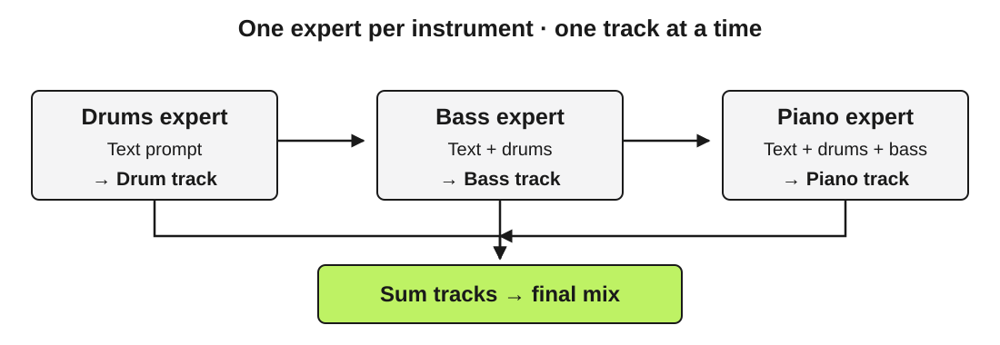

Audio · Music generation
YuE2 Instrument Stem Generation
Train separate instrument experts and generate their tracks one by one to build a complete music mix.

What you’ll build
Train an expert for each instrument, then generate a song sequentially: the first expert starts from a text prompt, and each next expert adds its own track using the previously generated tracks as context. Sum the aligned tracks into the final mix and export them separately for editing.
Model and adaptation
YuE2 with a separate NAR LoRA adapter per instrument and an input projection for audio context; frozen AR branch and VAE.
Each expert learns to generate one instrument from a partial mix. Start with a small set such as drums, bass and piano, then compare generation orders. These instrument experts are proposed adaptations of YuE2, not its existing AR/NAR experts. Use the model and datasets within their noncommercial research terms.
Data
Training
RawStems and Slakh2100 multitracks with instrument labels. Train each expert on its target stem and a random subset of the other stems as context, including empty context. Encode each submix separately and split by artist or source composition.
Evaluation
Held-out multitracks and MoisesDB, plus sequentially generated songs with fixed prompts and seeds. Compare separate experts with one shared adapter and with full-mix generation followed by source separation.
How to measure success
- Instrument purity ↑
- How well each track contains only its intended instrument.
- Rhythm and harmony ↑
- Alignment of each new track with the previously generated accompaniment.
- FAD ↓
- Audio quality of generated stems and final mixes relative to reference recordings, using a fixed embedding model.
- Human preference ↑
- Blind listening comparisons of track quality, musical coherence and the final mix.
What to submit
- A set of instrument adapters with reproducible training configurations.
- A sequential generation demo exporting separate tracks and their final mix.
- A comparison against shared-adapter and source-separation baselines.
- An analysis of generation order, instrument leakage and accumulated errors.